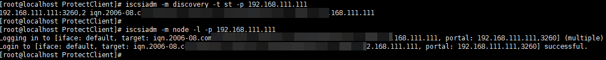
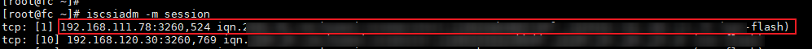

In Ethernet networking scenarios, you need to log in to the iSCSI initiator on the host where the client is installed by referring to this section if you want to use the SAN transmission mode or use the storage-layer backup mode for VM disks of datastores created based on OceanStor Dorado LUNs.
Prerequisites
The iSCSI initiator (iscsi-initiator-utils) has been installed on the host where the client is installed. For details, see "Installing iSCSI Initiators (Applicable to VMware)" in the OceanProtect DataBackup 1.5.0-1.6.0 Client Installation Guide.
Procedure
The following operations assume that OceanStor Dorado is used as the production storage device.
- Log in to the production storage device corresponding to the ESXi datastore and query the iSCSI logical port to obtain the IP address of the logical port.
- Log in to DeviceManager.
- Choose Services > Network > Logical Ports.
- On the displayed page, query the logical port with Data Protocol being iSCSI and record the IP address of the logical port.
- On the host where the client is installed, run the following commands in sequence to log in to the iSCSI initiator:
iscsiadm -m discovery -t st -p IP address
iscsiadm -m node -l -p IP address
The command output similar to the following is displayed:

- On the host where the client is installed, run the following command to view the session information and ensure that the IQN of the production storage device is online:
iscsiadm -m session
If the command output contains logical port information, the IQN is online.

- On the host where the client is installed, run the following command to obtain the IQN of the host:
cat /etc/iscsi/initiatorname.iscsi
The command output similar to the following is displayed:

- On the production storage device corresponding to the ESXi datastore, check and ensure that the IQN of the host where the client is installed is online.
- Log in to DeviceManager.
- Choose Services > Block Service > Host Groups > Initiators > iSCSI.
- On the iSCSI tab page, query the IQN obtained in 4, and check and ensure that the IQN is online.